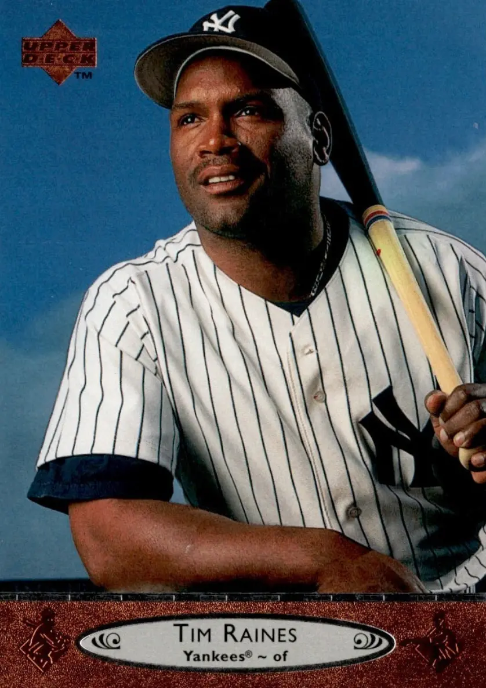

Tim Raines "Rock"
Career Highlights & Facts
(Facts are AI-generated and may require verification)
- Holds the record for the highest stolen base percentage among players with 400 or more career steals.
- Achieved the rare feat of appearing in a major league game alongside a biological son.
- Led the league in stolen bases for 6 consecutive seasons.
Would you like to find out more about Tim Raines?
Player Biography
Tim Raines September 4, 2013 / in BioProject - Person Hall of Fame 1980s All-Stars Parent-Child 2005 Chicago White Sox / by admin This article was written by Norm King When fans watched the Montreal Expos in the early 1980s, it was sometimes hard for them to determine if they were at a baseball game or a track meet. Players like Rodney Scott, Andre Dawson , and Jerry White ran roughshod over National League catchers. But no Expos player turned the tools of ignorance into tools of frustration more than Tim “Rock” Raines. He stole 70 or more bases six times and as of 2024 was fifth in career steals with 808, behind Rickey Henderson (1,406), Lou Brock (938), Billy Hamilton (914), and Ty Cobb (897), all of whom are in the Hall of Fame. Raines was elected to the National Baseball Hall of Fame in 2017. The Hall notes, “Raines finished his big-league career with the best stolen base percentage (84.7) of any player with 400-plus steals (since caught stealing became an official statistic in 1951).” 1 Timothy Raines was born on September 16, 1959, in Sanford, Florida, to Ned and Florence Raines. Ned was a semipro player in the Sanford area and Raines grew up in an athletic and competitive household of six children. (A seventh died at the age of 4 when she was hit by a car.) “We’d race against Pop as kids until somebody beat him,” said Tim. “I was the first to do it. I was 15.” 2 Raines was one of five boys, and in one local all-star game, the entire infield for one team consisted of Raines brothers: Levi at first, Sam at second, Ned III at the hot corner, and Tim at shortstop. Raines recalled, “In one all-star game of my childhood, my brothers and I formed the entire infield. It may have been one of the games that my father volunteered to umpire, though he refused to call balls and strikes in any games we played in. The local newspaper took note of our family ties, publishing stories about our exploits with headlines like When It Raines, It Pours.” 3 In fact, Ned thought that his namesake would make the majors before Tim did. Ned III played in the San Francisco Giants’ system, but never made the major leagues. “When we were in the minors, my dad thought he was the better player,” said Raines with a mischievous grin. “Ned is just as good as I am, he just wasn’t as lucky as I am.” 4 Raines was a multisport athlete at Seminole High School. In addition to playing baseball, he ran track, and in football scored 18 touchdowns and averaged 10.5 yards per carry as a running back. Despite his impressive gridiron statistics, Raines chose baseball as a career and signed with the Expos after he graduated from high school when they chose him in the fifth round of the 1977 amateur draft. Raines said, “Back then, the draft wasn’t televised, so I had no option other than to wait for our home phone to ring. And when it finally did, it wasn’t someone from the Dodgers on the other end. The call came from the Montreal Expos, who despite never making their interest in me known, had caught enough of a glimpse of me to pick me with the second pick of the fifth round. (Seeing as I was the first nonpitcher drafted by the Expos that year, I’ve jokingly referred to myself over the years as a number 1 pick).” 5 Still not old enough to drink or vote, the 17-year-old Raines reported to the Expos’ Gulf Coast League rookie-level team, where he batted a respectable .280 with a noteworthy .381 on-base percentage in 49 games (he walked 27 times), stole 29 bases, and, more significantly, was caught only twice. He played 27 games at second base and six games each at third base and the outfield. Raines really gave the Expos an idea of what they had when he moved up to the West Palm Beach Expos of the Class-A Florida State League in 1978. Despite missing 30 games because of injury, he hit a respectable .287 and, with 64 walks, had an excellent .400 on-base percentage. But what set him apart was his 57 stolen bases, which broke the team record of 48 set the previous season by Lonnie Harris, and placed him third in the league behind Tito Landrum (68) and Dennis Webb (61). Any doubts the Expos had about their budding star disappeared in 1979 when Raines moved up to Memphis of the Double-A Southern League. Although still a teenager, Raines hit a solid .290, whacked his first five home runs as a professional, stole 59 bases (second in the league), led the league with 104 runs scored, and had a .390 on-base percentage. This led to his first taste of life in “The Show,” during which he appeared in six games for the Expos as a pinch-runner and stole two bases without getting thrown out. Raines also married his high-school sweetheart, Virginia Hilton, in 1979. Their first child, Tim Raines Jr ., was also born that year. The great numbers notwithstanding, the Expos felt that Raines still needed some seasoning, so they sent him to the Denver Bears of the Triple-A American Association for 1980. This club is listed at number 37 in the Milb.com list of greatest minor-league teams of all time. 6 The Bears roared to a 92-44 record and won their division by 21½ games, with Raines a major factor in the team’s success. He won the league batting title with a .3543 batting average, .0002 points ahead of Orlando Gonzales of the Oklahoma City 89ers. Raines tied for the league lead in triples and set a league record for stolen bases with 77. He won the American Association Rookie of the Year award and was The Sporting News’ 1980 Minor League Player of the Year. Raines also got into 15 games that year with the Expos and managed only a single in 20 at-bats. He played a few games in left field, a position he had never played in the minors (he had been almost exclusively a middle infielder) but where he became an All-Star seven times in the majors. Raines also stole five bases, again without being caught stealing. Raines launched his major-league career with the Expos in 1981. And launched is the appropriate word because, unlike the Energizer Bunny, opposing batteries couldn’t stop him from going and going; he stole 20 bases in his first 19 games before finally getting thrown out in a game against the Dodgers on May 2. As Jim Kaplan wrote in Sports Illustrated: “There was rejoicing in the National League last Saturday. Baseball’s Raines of Terror had ended. After stealing 27 consecutive bases over three seasons, just 11 short of the major league record, Montreal’s Tim Raines was thrown out by Los Angeles Catcher Mike Scioscia trying to steal third at Olympic Stadium . From New York to San Diego pitchers and catchers embraced, second basemen and shortstops cried for joy and managers began to breathe again, albeit nervously.” 7 It was also when he became a full-fledged Expo that Raines earned his nickname, Rock, because he had only 7.8 percent body fat. For good measure, Tim Jr. was called Little Rock. 8 The fast start was no fluke. In 88 games during that strike-shortened season, Raines hit .304, scored 61 runs, and led the league with 71 stolen bases. He made the All-Star team and finished second in the Rookie of the Year vote behind Fernando Valenzuela . Raines had a decent second year, but the sad part about any sophomore jinx he may have had was the fact that it was self-inflicted. He was an All-Star again and led the league in stolen bases for the second year in a row, with 78. He also had 179 hits, good enough for eighth in the National League. However, his average dropped to .277, and he hit four home runs, one less than 1981, despite having more than twice as many at-bats. He also got caught off base numerous times, and often appeared lost in the outfield. The Expos even moved him back to his original position of second base to get him on track. “We moved him to second base for a while and there were times he held the ball without making a play,” said former team President John McHale . 9 At the time, Raines blamed his diminished play on personal difficulties, including a miscarriage by his wife and the death of a favorite uncle. But in truth, the early 1980s were an era of extensive drug use among major-league players. In order to fit in, Raines began experimenting with cocaine and eventually got hooked. “Once I got into the big leagues, you just sort of want to fit in,” Raines told a sportswriter. “I felt it was an experiment. I tried and I got hooked. You can’t just turn it on and off that easily. I just got in with the wrong people.” 10 Fortunately for Raines, he made the right decisions and got in with the right person after the 1982 season ended. He went into drug rehabilitation and forged a strong relationship with teammate Andre Dawson . Their friendship grew so strong that Raines named his second son after his mentor. Raines later said, “When Virginia gave birth to our second son in July 1983, we had an easy time selecting a name: Andre. We wanted to honor my friend and all he had done to help get me on the straight and narrow. My second son even took on a miniature version of his godfather’s nickname: Little Hawk.” 11 The drug rehabilitation worked as Raines rebounded to have an excellent 1983 season and, more importantly, he stayed off drugs. He led the league in steals again, with a career-high 90, as well as in runs scored, with 133. His batting average improved to .298, and he was fourth in the league with a .393 on-base percentage. He drove in 71 runs, making him the first player in the National League to drive in 70 runs and steal 70 bases in the same season. 12 He also made his third straight All-Star team. The 1984 season was a tough one for the Expos; their 78-83 record marked the first time they played below .500 since 1978. Nonetheless, Raines had another excellent season. He hit over .300 (.309) for the first time over a full season (160 games). He made it 4-for-4 in both All-Star Game appearances and stolen-base crowns (75 steals) and led the league in doubles, with 38. Raines’ 1985 season was a winner before he even set foot on a diamond when he was awarded $1.2 million in his pay arbitration case, a record at the time. (The Expos had offered $1 million even.) On the field it was more excellent numbers. Raines made his fifth All-Star Game appearance, his 70 steals were second in the league to Vince Coleman ’s 110, and he was third in the league in both batting (.320) and on-base percentage (.405). Excellent numbers aside, Raines’ past peccadillos were again brought to public attention when he was one of more than 11 players who testified at a grand jury hearing that led to the indictment of seven men on 165 drug counts in Pittsburgh. He did not testify at the trial. Raines’ next two seasons were perhaps the finest of his career, even though he didn’t win the stolen-base crown either season. He won his only batting title in 1986 with a .334 average and led the league with a .413 on-base percentage. He was an All-Star again and won the Silver Slugger award for his position. He stole 70 bases – the sixth season in a row in which he had 70 or more steals – good for third in the league. Ordinarily, a free agent would have difficulty keeping track of all the offers coming his way after a season like that, but this was the infamous era of collusion among major-league owners, so for Raines the overtures from other teams were few and far between. Raines recalled, “The owners’ unwillingness to pay the best players in the game what we deserved left a bad taste in my mouth. Baseball fans should have been talking about my accomplishments on the field, not my contract situation. All I wanted was to play ball. But I also felt I deserved fair compensation for my services. It didn’t seem right that a bunch of rich owners could get together and collude to drive salaries down. It became a matter of principle.” 13 “Raines, given no opportunity to counter take-it-or-leave-it offers from the San Diego Padres, Houston Astros and Atlanta Braves, has reportedly agreed to return to the Montreal Expos at the same terms he initially rejected: Three years for $4.8 million, with another $200,000 a year thrown in to counter Canadian taxes,” wrote Ross Newhan in the Los Angeles Times . 14 Under the rules at the time, Raines couldn’t sign with the team until May 1. He made his return on May 2, 1987 , when the Expos played the World Series champion New York Mets at Shea Stadium . His belated season debut went down in Expo lore as one of the great days in team history. Without having the benefit of spring training, Raines was spectacular in his first game back: 4-for-5, a triple (off the first pitch he saw that season), a stolen base, and a 10th-inning grand slam that was the difference in an 11-7 Expos win. Raines said, “That game remains one of the most memorable of my career. In addition to solidifying my role as a team leader, it served as a great national showcase for the Expos. I think it also showed that teams had made a mistake by not bidding for my services.” 15 Raines’ return sparked the Expos as well. Nobody expected much from the team that season. Sports Illustrated predicted they would lose 98 games, and that number looked optimistic when the Expos lost their first five games of the season. They were 8-13 the day Raines’ name first appeared on manager Buck Rodgers ’ lineup card, but they went 83-58 the rest of the way and were in the race up until the last week of the season, finishing in third place, four games out, with a 91-71 record. For the year, Raines led the league in runs scored, with 123, hit .330, achieved a career high in home runs with 18, and had a .429 on-base percentage. As well, Raines was not only an All-Star, but he was also voted All-Star Game MVP on the strength of three hits, a stolen base, and a two-run triple that broke up a scoreless tie in the 13th inning. The irony of that performance was that it was his last appearance in an All-Star Game. As good as 1987 was for Raines, the rest of the decade was eminently forgettable. Injuries limited him to 109 games in 1988. His average plummeted 60 points to .270 and his stolen-base total dropped to 33. He bounced back in 1989 with a .286 average, and while the days of 70-plus steals were only a memory, he still swiped 41. Also, his .395 on-base percentage was good enough for fifth in the league. Injuries again limited Raines’ playing time to 130 games in 1990. He hit .287 and scored only 65 runs, but he stole 49 bases, sixth in the league. By the end of the 1990 season, the Expos looked at their options regarding Raines and arrived at the following conclusions: His production had declined in the past few years. He was 30 years old. They had younger, promising outfielders, including Larry Walker , Marquis Grissom , and Dave Martinez . Consequently, the Expos traded Raines to the Chicago White Sox on December 23, 1990, along with pitcher Jeff Carter and a player to be named later (minor-league pitcher Mario Brito) for outfielder Iván Calderón and pitcher Barry Jones . The trade worked out well for Raines. In 1991, he played in more than 150 games (155) for the first time since 1986. Statistically, he had the lowest batting average of his career up to that point (.268), but was third in the league in stolen bases with 51, and his 102 runs scored were ninth in the league. He crossed American League home plates 102 times in 1992, sixth in the league this time, as his batting average shot back up to a more Raines-like .294. The White Sox were an up-and-coming team when Raines joined them. They hadn’t reached the playoffs since 1983, and despite some good records early in the 1990s, they had the misfortune of being in the same division as some strong Oakland and Minnesota clubs. They finally won another division crown in 1993, with a significant contribution from Raines, even though he missed six weeks early in the season with a thumb injury. The 33-year-old Raines was slowing down, as he stole only 21 bases in 115 games, less than half his total the previous season. Nonetheless, he hit .306 and had 16 home runs to go along with a .401 on-base percentage. That last total would have put Raines in the league’s top 10 if he had had enough plate appearances to qualify. The White Sox lost the American League Championship Series to the Toronto Blue Jays in six games. Raines had an excellent series, with 12 hits in 27 at-bats (.444) and a .483 on-base percentage in a losing cause. Had there been a playoff in 1994, the White Sox would have been there again; they were leading the American League Central Division when the season-ending strike began. Raines hit .266 in 101 games and his stolen-base totals continued to decline as he stole only 13. Injuries continued to dog him in 1995; he played in 133 games. Despite a .285 batting average and 12 home runs, Raines again reached only 13 in the stolen-base department. The team itself was also in decline, finishing with a 68-76 record (.472) after being a contender every year since 1990. Those 13 steals were the result, Raines said, of hitting in front of Frank Thomas . “[Raines] says part of the reason he stole just 13 bases was that the White Sox, particularly cleanup hitter Frank Thomas, didn’t want him running,” wrote Jon Heyman in The Sporting News . “‘I don’t feel like I’ve slowed. I feel like I was slowed down by them not wanting me to run,’ Raines says.” 16 The White Sox obviously disagreed with Raines’ self-assessment, because they traded him to the New York Yankees in December 1995 for a minor-league pitcher named Blaise Kozeniewski, whose career ended after 1995. In essence, the White Sox gave Raines away. If timing is everything, then Raines had everything when he joined the Yankees. The Bombers were just beginning their late-’90s era of dominance when Raines joined the roster. Injuries plagued him in his three years with the team (1996-98) and limited him to an average of 81 games per season, but he finally got to play in a World Series (1996) and he won two World Series rings (1996, 1998). Despite the limited playing time, an analysis of Raines’ numbers shows that he was quite productive when he did play. His cumulative batting average for the three seasons was .299 with a .395 on-base percentage, but he stole only 12 bases. He scored a total of 154 runs, which would have averaged out to 104 runs over a 162-game season. Raines became a free agent after the 1998 season, and he signed on with the Oakland A’s for $600,000, less than half of his $1.3 million salary of the previous season. Money matters became of secondary importance, however, on July 16, 1999, as Raines ran to the outfield for a game against the Giants. After what had been a routine jog to his position, he suddenly felt exhausted, and went to the hospital that day with swollen ankles and knees. He underwent a series of tests, including a kidney biopsy. “The tests showed Raines had lupus, a chronic autoimmune disease that causes the immune system to attack normal tissue,” wrote Jeff Pearlman in Sports Illustrated . “It is incurable but treatable. In Raines’s case the lupus attacked his kidneys, causing excessive water retention.” 17 The subsequent eight months were difficult for Raines as he underwent treatment that included radiation and medication. His weight fell to 170 pounds. “My jeans would hang off my body, like the kids today wear them,” he told Pearlman. “But it wasn’t on purpose.” 18 Raines’ health improved as spring training for the 2000 season rolled around. He attended the Yankees’ training camp but didn’t make the team. Yankees general manager Bob Watson , who co-chaired the US Olympic baseball team selection committee, invited him to try out for the squad, but he didn’t make that roster, either. Not all the news was bad for Raines in 2000. He was inducted into the Expos Hall of Fame that year, and while he was in Montreal, he told team owner Jeffrey Loria in all sincerity that he wanted a shot at returning to the Expos in 2001. Raines was invited to the 2001 Expos training camp and he made the team on the strength of a .414 spring-training average. He served as a fifth outfielder and unofficial coach for the team’s young outfielders. He played in 47 games, hit .308 with a .433 on-base percentage, and stole the 808th and final base of his career on September 25 against the Mets at Olympic Stadium. Nine days later, the Expos sold Raines to the Orioles, which gave him an opportunity to do some father-son bonding in a way that had been done only once before in the major leagues, by Ken Griffey Sr. and Ken Griffey Jr. with Seattle in 1990. The Raineses duplicated the feat on October 3, 2001, when Tim Sr. pinch-hit in a game in which Tim Jr. was playing center field. Raines recalled, “We stood next to each other during the national anthem that night. I’m not a guy who sheds many tears, but after everything I had experienced the previous couple of years, not to mention what the country was going through at the time, I couldn’t help but get emotional. With Tim Jr. batting leadoff and playing center field that night, manager Mike Hargrove inserted me into the game as a pinch-hitter in the seventh inning.” 19 The following night, the two played the full game together. In all, father and son appeared in the same box score four times. 20 Raines’ playing career finally came to an end in 2002. The Marlins signed him as a free agent during spring training, and in 98 games during the season, the 42-year-old hit only .191, after which he retired. And so ended a career in which he batted .298 with 2,605 hits, a .385 on-base percentage and 1,571 runs scored. He was one of a few players to play in four different decades and one of only four to steal a base in four decades. (The other three are Ted Williams , Rickey Henderson, and Omar Vizquel .) After retiring as a player, Raines stayed in baseball. He managed in the Expos’ minor-league system, and the team retired his number 30 in 2004, its last year in Montreal. He was a coach with the White Sox in 2005, the year they broke the Curse of the Black Sox and won the World Series. Raines said, “The combination of power, speed, and pitching took the White Sox to new places, and it was a joy to be along for the ride. After winning 99 games and the division title, we ripped through the competition in the postseason, losing only one game, in the American League Championship Series, en route to the White Sox’s first title since 1917. I’m not sure that winning a World Series as a coach is the same as winning one as a participant, but as someone who had two rings as a player, I found special meaning in getting another as a coach. I was equally excited for my onetime teammate Frank Thomas, who, after 16 years with the White Sox, finally got to play on a championship team in his last season in Chicago. Unfortunately, Frank didn’t participate in the postseason due to injury, but he got a tremendous ovation when he threw out the first pitch of Game 1 of the ALDS.” 21 Raines has managed in the independent Atlantic League, and was back in Organized Baseball in 2013 with the Toronto Blue Jays as a minor-league baserunning and outfield instructor. Also in 2013, Raines was inducted into the Canadian Baseball Hall of Fame in St. Mary’s, Ontario. The occasion gave him an opportunity to reflect on how he felt playing for the Expos. “I loved the fans in Montreal,” Raines said during his acceptance speech. “I loved the noise they made at the Big Owe. The more they cheered the more I wanted to do for them.” 22 Tim Raines was elected to the National Baseball Hall of Fame in 2017, voted in by 86 percent of those who cast ballots. In June 2017 Triumph Books published Tim Raines’ autobiography, Rock Solid: My Life in Baseball’s Fast Lane , written with Alan Maimon. Last revised: November 1, 2024 Sources In addition to the sources cited in the Notes, the author consulted Baseball-Reference.com and numerous other sources. This biography of Tim Raines was updated in 2024 by Eric Conrad. Notes 1 https://baseballhall.org/hall-of-famers/rainestim . 2 Ron Fimrite, “Don’t Knock the Rock,” Sports Illustrated , June 25, 1984. 3 Tim Raines and Alan Maimon, Rock Solid: My Life in Baseball’s Fast Lane (Chicago: Triumph Books, 2017), 21. 4 Associated Press, “Ned Raines missed guessing who’s best,” Tuscaloosa News , April 4, 1982. 5 Raines and Maimon, 30-31. 6 “100 Best Minor League Baseball Teams,” MiLB.com, https://web.archive.org/web/20221112223244/https://secure.milb.com/milb/history/top100.jsp . 7 Jim Kaplan, “Raines Really Pours It On,” Sports Illustrated , May 11, 1981. 8 Kaplan. 9 Murray Chass, “Cocaine Confessions: Players, Teams Lose Out,” Palm Beach Post (reprinted from the New York Times ), August 20, 1985. 10 Chass. 11 Raines and Maimon, 75. 12 Ian MacDonald, “Montreal Rehashes Carter Signing,” The Sporting News , October 12, 1983. 13 Raines and Maimon, 98. 14 Ross Newhan, “Collusion, or a New Coercion?: Baseball Is Paying Under New Rules,” Los Angeles Times , April 4, 1987. 15 Raines and Maimon, 100-101. 16 Jon Heyman, “Raines Thrilled,” The Sporting News , January 8, 1996. 17 Jeff Pearlman, “Like a Rock,” Sports Illustrated , April 16, 2001. 18 Pearlman. 19 Raines and Maimon, 233. 20 That’s where any comparison between Ken Griffey Jr. and Tim Raines Jr. ends. Raines played only 75 major-league games over three seasons. 21 Raines and Maimon, 238. 22 Bill Young, “Tim Raines Says Thank You Montreal,” Montreal Gazette , July 24, 2013. Full Name Timothy Raines Born September 16, 1959 at Sanford, FL (USA) Stats Baseball Reference Retrosheet If you can help us improve this player’s biography, contact us . Tags Hall of Fame · 1980s All-Stars · Parent-Child · 2005 Chicago White Sox Share this entry Share on Facebook Share on X Share on LinkedIn Share on Reddit Share by Mail
Career Totals
| WAR | AB | H | HR | BA | R | RBI | SB | OBP | SLG | OPS | OPS+ |
|---|---|---|---|---|---|---|---|---|---|---|---|
| 69.5 | 8872 | 2605 | 170 | .294 | 1571 | 980 | 808 | .385 | .425 | .810 | 123 |
Statistics via Baseball-Reference.com
The Original Clue